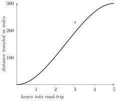
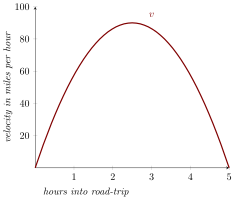

We use limits to compute instantaneous velocity.
When one computes average velocity, we look at To obtain the (instantaneous)
velocity, we want the change in time to “go to” zero. By this point we should know
that “go to” is a buzz-word for a limit. The change in time is often given as an
interval whose length goes to zero. However, intervals must always be written
Given we see that cannot be negative, or else it violates the notation for
intervals. Hence, if we want smaller, and smaller, intervals around a point ,
and we want to be able to be negative, we write
Regardless of the value of , the average velocity on the interval is computed by We
will be most interested in this ratio when approaches zero. Let’s put all of this
together by working an example.
A group of young mathematicians recently took a road trip from Columbus Ohio to
Urbana-Champaign Illinois. The position (west of Columbus, Ohio) of van they drove
in is roughly modeled by on the interval , where is measured in hours. What is the
average velocity on the interval ?
Additionally, let What is the average velocity on when ? What is
the average velocity on when ?
The average velocity on the interval is
On the other hand, consider the interval When , the average velocity is
On the other hand, when , the average velocity is
In our previous example, we computed average velocity on three different intervals. If
we let the size of the interval go to zero, we get instantaneous velocity. Limits will
allow us to compute instantaneous velocity. Let’s use the same setting as
before.
The position of van (west of Columbus, Ohio) our young mathematicians drove to
Urbana-Champaign, Illinois is roughly modeled by Find a formula for the
(instantaneous) velocity of this van.
Again, we are working with the interval To
compute the average velocity, we write but this time, we will let go to zero. Write
with me
Now expand the numerator of the fraction and combine like-terms: Factor an from
every term in the numerator: Cancel from the numerator and denominator: Plug in
: This gives us a formula for our instantaneous velocity, . For your viewing
enjoyment, check out graphs of both and :

